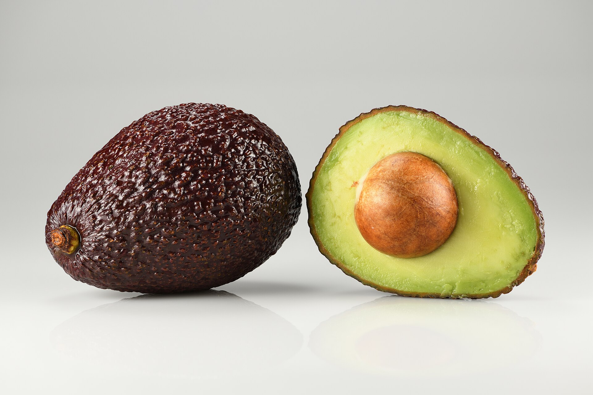

Árvores e Frutíferas
Abacate avocado
Persea americana ‘Hass’
No Brasil, o nome avocado costuma identificar cultivares subtropicais de abacate, especialmente a Hass. Seus frutos são menores que os tipos conhecidos como abacate manteiga, têm casca rugosa que escurece durante o amadurecimento e polpa cremosa com maior teor de óleo. O fruto amadurece depois de colhido e é muito usado em saladas, pastas e guacamole.
- Grupo
- Abacate subtropical
- Referência
- Cultivar Hass
- Destaque
- Casca rugosa e polpa cremosa